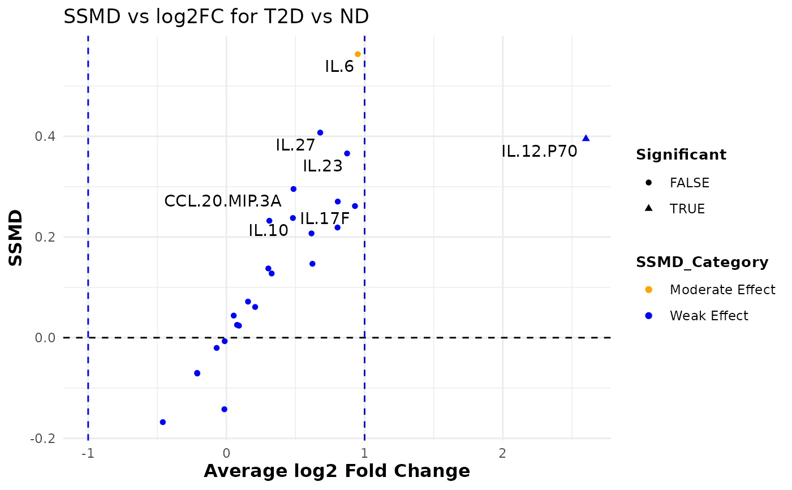

This function reshapes the input data and computes summary statistics (mean and variance) for each variable grouped by a specified factor column. It then calculates the SSMD (Strictly Standardized Mean Difference) and log2 fold change between two groups (group1 and group2) and categorizes the effect strength as "Strong Effect", "Moderate Effect", or "Weak Effect". A dual flash plot is generated using ggplot2 where the x-axis represents the average log2 fold change and the y-axis represents the SSMD. Additionally, the function prints the computed statistics to the console.
Usage
cyt_dualflashplot(
data,
group_var,
group1,
group2,
ssmd_thresh = 1,
log2fc_thresh = 1,
top_labels = 15
)Arguments
- data
A data frame containing the input data.
- group_var
A string specifying the name of the grouping column in the data.
- group1
A string representing the name of the first group for comparison.
- group2
A string representing the name of the second group for comparison.
- ssmd_thresh
A numeric threshold for the SSMD value used to determine significance. Default is 1.
- log2fc_thresh
A numeric threshold for the log2 fold change used to determine significance. Default is 1.
- top_labels
An integer specifying the number of top variables (based on absolute SSMD) to label in the plot. Default is 15.
Value
A ggplot object representing the dual flash plot for the comparisons between group1 and group2.
Examples
# Loading data
data_df <- ExampleData1[, -c(2:3)]
dfp <- cyt_dualflashplot(
data_df,
group_var = "Group",
group1 = "T2D",
group2 = "ND",
ssmd_thresh = -0.2,
log2fc_thresh = 1,
top_labels = 10
)
#> cytokine mean_ND mean_PreT2D mean_T2D variance_ND
#> 1 CCL.20.MIP.3A 6.335988e+02 4.035826e+02 8.872060e+02 6.723886e+05
#> 2 GM.CSF 2.645960e+00 3.110162e+00 1.923838e+00 2.628551e+01
#> 3 IFN.G 5.773049e+04 1.830264e+04 6.148444e+04 2.863836e+10
#> 4 IL.10 9.788124e+02 8.362581e+02 1.366340e+03 1.988757e+06
#> 5 IL.12.P70 1.300202e+01 3.905242e+01 7.889384e+01 4.154092e+02
#> 6 IL.13 1.063981e+03 1.542979e+03 1.122447e+03 5.601743e+06
#> 7 IL.15 7.924545e+00 4.286364e+00 8.221010e+00 3.543352e+01
#> 8 IL.17A 3.521896e+02 6.529712e+02 6.149678e+02 9.399629e+05
#> 9 IL.17E.IL.25 1.010101e-02 1.626263e-02 1.000000e-02 1.010101e-06
#> 10 IL.17F 1.630606e+00 2.354747e+00 3.107273e+00 1.563497e+01
#> 11 IL.1B 2.805961e+03 2.976948e+03 4.299424e+03 6.627093e+07
#> 12 IL.2 9.226578e+03 1.071787e+04 1.612881e+04 2.602854e+08
#> 13 IL.21 2.054537e+02 2.099691e+02 3.163148e+02 3.149527e+05
#> 14 IL.22 5.131313e-02 6.838384e-02 6.333333e-02 4.582952e-03
#> 15 IL.23 1.470707e-01 2.425253e-01 2.693939e-01 3.125766e-02
#> 16 IL.27 6.619192e-02 8.339394e-02 1.059596e-01 6.181769e-03
#> 17 IL.28A 5.369697e-02 7.098990e-02 6.660606e-02 2.452275e-03
#> 18 IL.31 4.090909e-02 9.050505e-02 3.535354e-02 6.622635e-03
#> 19 IL.33 1.170000e+00 1.426162e+00 1.160202e+00 2.093643e+00
#> 20 IL.4 3.435354e-01 7.074747e-01 2.966667e-01 4.243537e-01
#> 21 IL.5 1.342252e+02 3.396195e+02 1.550502e+02 1.087858e+05
#> 22 IL.6 4.619515e+03 5.197266e+03 8.925129e+03 2.863599e+07
#> 23 IL.9 2.025448e+02 2.557497e+02 2.541647e+02 1.337711e+05
#> 24 TNF.A 5.045597e+03 3.069403e+03 5.623625e+03 7.022355e+07
#> 25 TNF.B 6.407071e-01 7.093939e-01 6.102020e-01 2.369019e+00
#> variance_PreT2D variance_T2D ssmd log2FC SSMD_Category
#> 1 2.741372e+05 8.015263e+05 0.295420299 0.48569948 Weak Effect
#> 2 3.135480e+01 1.078529e+01 -0.167729355 -0.45980342 Weak Effect
#> 3 2.297700e+09 2.062221e+10 0.023919607 0.09088794 Weak Effect
#> 4 1.185786e+06 3.325080e+06 0.237746262 0.48121242 Weak Effect
#> 5 2.564349e+04 5.522021e+04 0.395066324 2.60117683 Weak Effect
#> 6 1.113808e+07 4.933465e+06 0.025474096 0.07717527 Weak Effect
#> 7 2.576746e+01 5.564913e+01 0.043930898 0.05298748 Weak Effect
#> 8 2.878270e+06 1.942894e+06 0.218873306 0.80415853 Weak Effect
#> 9 3.882828e-03 0.000000e+00 -0.142133811 -0.01449957 Weak Effect
#> 10 3.365324e+01 4.814175e+01 0.261496797 0.93024059 Weak Effect
#> 11 3.762171e+07 3.763120e+07 0.207203618 0.61564856 Weak Effect
#> 12 4.096423e+08 1.042666e+09 0.270421185 0.80577278 Weak Effect
#> 13 2.493670e+05 8.250469e+05 0.146839155 0.62254771 Weak Effect
#> 14 4.509606e-03 1.069184e-02 0.137543211 0.30363695 Weak Effect
#> 15 9.370478e-02 1.921160e-01 0.366022692 0.87320747 Weak Effect
#> 16 5.660588e-03 1.287739e-02 0.407374084 0.67878724 Weak Effect
#> 17 5.100112e-03 3.724527e-03 0.232289102 0.31081278 Weak Effect
#> 18 4.882525e-02 5.596557e-03 -0.071075717 -0.21056699 Weak Effect
#> 19 2.706103e+00 1.907414e+00 -0.006927303 -0.01213249 Weak Effect
#> 20 2.958295e+00 4.733041e-01 -0.069958805 -0.21161574 Weak Effect
#> 21 9.881060e+05 1.241351e+05 0.061023447 0.20808037 Weak Effect
#> 22 5.718504e+07 8.826681e+07 0.563167605 0.95013174 Moderate Effect
#> 23 2.112652e+05 1.936383e+05 0.127581171 0.32752255 Weak Effect
#> 24 1.626215e+07 5.980747e+07 0.071687047 0.15647551 Weak Effect
#> 25 2.763518e+00 2.153316e+00 -0.020286418 -0.07037796 Weak Effect
#> Significant
#> 1 FALSE
#> 2 FALSE
#> 3 FALSE
#> 4 FALSE
#> 5 TRUE
#> 6 FALSE
#> 7 FALSE
#> 8 FALSE
#> 9 FALSE
#> 10 FALSE
#> 11 FALSE
#> 12 FALSE
#> 13 FALSE
#> 14 FALSE
#> 15 FALSE
#> 16 FALSE
#> 17 FALSE
#> 18 FALSE
#> 19 FALSE
#> 20 FALSE
#> 21 FALSE
#> 22 FALSE
#> 23 FALSE
#> 24 FALSE
#> 25 FALSE
print(dfp)
